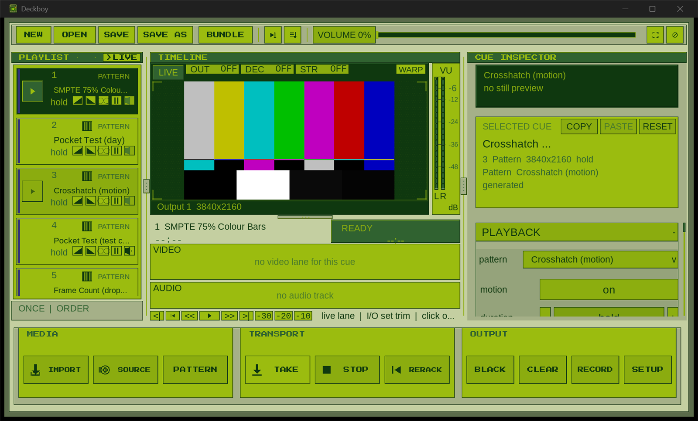
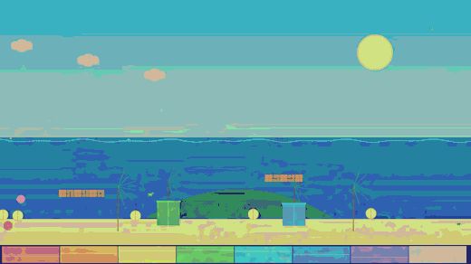
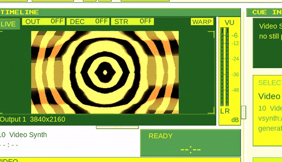
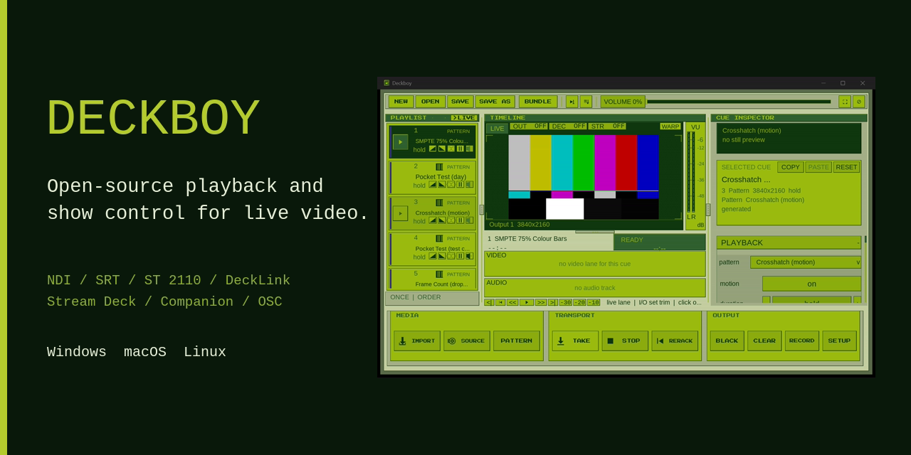

The facts
| Name | Deckboy |
|---|---|
| What it is | Cue-based media playback and show control for live video |
| Price | Free. No paid tier, no account, no licence server, no telemetry |
| Licence | GPL-3.0-or-later |
| Platforms | Windows, macOS and Linux, from one show file |
| Built with | Native C++ on SDL3, decoding through FFmpeg in process |
| Made by | Utopian Academy |
| Download | github.com/Utopian-Academy/Deckboy/releases |
| Source | github.com/Utopian-Academy/Deckboy |
Copy, ready to paste
One line
Deckboy is free, open-source cue-based media playback and show control for live video — clips, slides and live sources on one cue list, out to a screen, NDI, SRT or Blackmagic SDI, driven from a Stream Deck, Bitfocus Companion, OSC, MIDI or timecode.
One paragraph
Deckboy is a cue deck for live events: a playlist of clips, stills, slide decks and live sources that an operator takes to air one at a time, with fades, loops and a last frame that holds instead of revealing a desktop. The programme goes to a fullscreen output and out over NDI, SRT, RTMP, Blackmagic SDI or SMPTE ST 2110 at the same time, while it records. Any window on the machine or any web page can be a cue. Slide decks import as one cue per slide, with presenter view as an output of its own. It is native C++ on SDL3 for Windows, macOS and Linux, free under the GPL, with no account and nothing that phones home.
What makes it unusual
Four things no other free player has. It hosts your own VST3 effects and instruments inside a cue's audio chain, so the reverb or channel strip an engineer already owns works on a cue beside Deckboy's own effects, and an instrument plays from a MIDI keyboard or the computer's. A window cue takes any application on the show machine to air at its own full resolution, following it as it moves, with anything in front of it kept out of shot — so the operator carries on working on the same computer. A rack of effects built from physics rather than filters: schlieren imaging, Chladni figures, a wave equation, crystal grain growth, retinal persistence. And a pair that crosses between picture and sound — one plays the picture through an audio chain, the other draws the played audio through the picture.
Images
Right-click to save, or link them directly. Full resolution behind each one.
{kind=link}



{kind=link}

{kind=link}

{kind=link}

Video and audio
- The trailer — 40 seconds, 1280×738, H.264. How it was made: Deckboy shot it itself, over its own control port.
- The theme — the music from the trailer, played on Deckboy's own chip voice and run through its own audio rack.
Things people get wrong
- It is not a switcher. It is a source and a player; it pairs with a switcher rather than replacing one.
- It is not a projection-mapping suite, though it has warp, keystone and edge blend per output.
- There is no paid version, no "pro" tier and no upgrade path. This is the whole application.
- The builds are not code-signed, so Windows and macOS warn about an unknown developer. Signing needs paid developer accounts the project has not bought.
Try it without installing anything
- Databend a picture in your browser — the real effect, running on your own photo.
- Generate test patterns at any raster, including a numbered LED panel map.
- Check the screen in front of you.